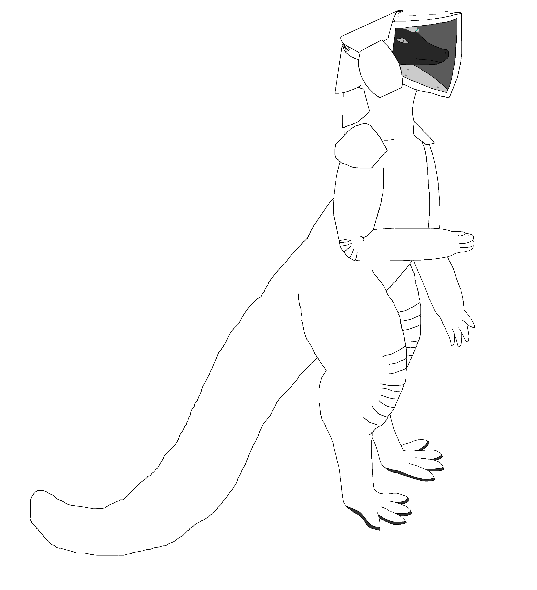

link to this page
Reminiscence
 Reminiscence (Remi for short) is a modified protohuman, member of the Reminiscence divergency and the source of Felicity. She had been primarily occupied with passive personal growth and hedonist activities ever since her successful mind uploading.
Reminiscence (Remi for short) is a modified protohuman, member of the Reminiscence divergency and the source of Felicity. She had been primarily occupied with passive personal growth and hedonist activities ever since her successful mind uploading.
Remi is a good example of an average organic inhabitant of the Stareater Expanse, albeit somewhat technologically stunted due to her unwillingness to make use of pieces of technology and especially augmentation that had not been validated by her more capable digital divergents.
neural activity collection
Remi's entire nervous system is probed with leads that collect membrane potential from her neurons and allow it to be recorded for external storage. This augmentation is an example of something which is still very expensive even in what otherwise holds the appearance a post scarcity economy.
These are long nested bundles of carbon (conductive) and boron nitride (insulating) nanotubes, on one end connected to analog-digital voltage converters that quantize voltages between the tubes into digital data, and on the other end tipped with protein that allow them to hook into the membranes of neurons and transfer the cross-membrane voltage to the nanotubes. Producing a single such probe carries a trivial cost when done at scale with the relevant specialized machinery, but Remi had to acquire one for each of her 100 billion neurons, predictably blowing up the cost into something better thought as an investment. Implantation process was also nontrivial and carried a massive cost of time - most of the probes were relatively easy to attach, as majority of the brain's neurons are located within a few millimetres of the surface, but some, about a billion, had to be precisely guided through whole centimetres of brain tissue without accidentally becoming attached to any other neurons along the way, which required numerous operation, ones that cannot be interrupted, take most of an entire day, and require her head to be kept still for the whole process as microscopic tendrils of the operating machinery carefully make their way through her neural tissue.
The voltages are quantized 1000 times per second and saved in 16 bit precision, yielding nearly 200TB/s of constant data flow (= 17.28EB per day) that has to be saved into portable drives she carries attached to her body and swaps routinely.
For comparison, the total of internet traffic on earth during terran year 2023 averaged out to 152TB/s, quite close to the amount of data produced by Remi.
She usually carries a 24-exabyte 5D optical tape drive with her, which can last 33 hours between swaps, giving her a comfortable 9-hour window of time every day to swap the drive before it fills up. This results in the raw neural activity data being notably contaminated with neural activity specifically corresponding to the awareness of always carrying a data recording device and having to swap it regularly, which if not filtered could lead to any mind uploads made from it experiencing a reoccurring or even constant persistent feeling of always carrying something. Additional recording that gives context to what the neural activity means, such as video, audio, body position, and occasional manual labeling, is also saved, as it is useful for such filtering, but even constant high-quality video recording produces negligible amounts of data compared to the neural activity.
Everyday equipment
A number of things that Remi will have with her in nearly all circumstances.
- breath candy - a small pack of sweets infused with an engineered chemical compound that gets readily absorbed into the blood through stomach and intestinal lining within minutes of consumption, where it proceeds to absorb carbon dioxide and break down into useable oxygen (as well as some non-toxic waste compounds), providing a quick and convenient stamina and energy boost or maybe even another way to survive for longer when breathing is not an option
- autopack - a small device that can be carried as a backpack or belt pouch, equipped with a number of straps and mechanical manipulators, which will automatically pack objects given to it into the most stable and space-efficient arrangement for storage, and provide a list of the items it has stored for easy retrieval, practically emulating of the overly simplistic and convenient inventory systems most video games provide.
EVA gear
Medium spacesuit

Medium weight suit for extended duration activities in vacuum, extreme cold or otherwise dangerous environments.
This is a fairly low-tech piece of equipment that does a lot of its work through purely passive systems such as insulation. It is just as much an exercise in Remi's passions as it is an actual piece of equipment, as it is made with a lot of inspiration from some of the earliest spacesuits ancient protohumans used as they made their first steps on celestial bodies beyond terra.
In practice a lot of the suit's systems rely on much simpler modern alternatives instead of those used in the ancient historical suits taken as inspiration, especially the systems regarding life support.
The design carries clear marks of Felicity's engineering.
HEV Powersuit
Thick and durable autonomous suit meant to provide sufficient protection in the most hazardous of environments, including high pressure, toxic and/or corrosive atmosphere, micrometeorite showers, ionizing radiation, terrain collapse hazard and long falls. Enough strength amplification is also provided to easily lift about 50 kilonewtons of weight.
The size of the suit comes with some tradeoffs, most visibly the hands are much larger and have fewer fingers which reveals them as mere proxies rather than actually containing the hands, since the desired level of protection would not have been possible with a glove-like setup, which is also the case for the feet. The notably axe-head shaped helmet is a tradeoff between aesthetic and function, as the shape accomodates Remi's long snout in a way that allows her to open her mouth, which would not have been possible with a more form-fitting helmet.
Enough computing power is packed into the suit in the form of Civic chips to run at least 2 instances of UEIA, making it capable of operating autonomously and seeking out Remi should dangerous circumstances reappear after she had already exited, possibly even automatically equipping itself if she is incapacitated due to atmospheric loss or other reasons. Internal systems are also capable of providing limited medical aid in the case that she is wounded, and the auto-fitting systems can make the interior loose enough for Remi to slip her arms out of the suit to access other areas. This feature is used as just one of the redundancies present to make sure that Remi would be able to get out of the suit in case of power loss.
relevant pages
 Reminiscence divergency
Reminiscence divergency